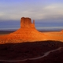
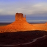

Soil bacteria evolve with climate change
While evolution is normally thought of as occurring over millions of years, researchers at the University of California, Irvine have discovered that bacteria can evolve in response to climate change in 18 months. In a study published in the Proceedings of the National Academy of Sciences, biologists from UCI found that evolution is one way that soil microbes might deal with global warming.
Read more
Antarctic ice-sheet melting to lift sea level higher than thought, Harvard study says
Global sea level rise associated with the possible collapse of the West Antarctic Ice Sheet has been significantly underestimated in previous studies, meaning sea level in a warming world will be greater than anticipated, according to a new study from Harvard researchers.
Read more
Extent of human impact on the world's plant-life revealed
Research has shed new light on the impact of humans on Earth's biodiversity. The findings suggest that the rate of change in an ecosystem's plant-life increases significantly during the years following human settlement, with the most dramatic changes occurring in locations settled in the last 1500 years.
Read more
Photos Box


 



Fermentum Vulputate Ac Sit Amet Metus
Mauris sed lectus dui. Suspendisse enim elit, tempor ac ullamcorper et, eleifend quis sem. Sed euismod sagittis ligula, a imperdiet sapien molestie nec. Curabitur ut eros a justo fermentum vulputate ac sit amet metus. Aenean quis dignissim diam.
Read more

Aenean Quis Dignissim Diam
Vulputate ac sit aenean quis dignissim diam. Etiam venenatis congue velit, varius gravida mi volutpat ac. Sed ut pretium dolor. Etiam tempor felis ac eros dictum quis consectetur dolor tristique. Aliquam scelerisque, odio vel luctus commodo, nisl nisl vehicula metus, ut lobortis eros sem blandit est.
Read more